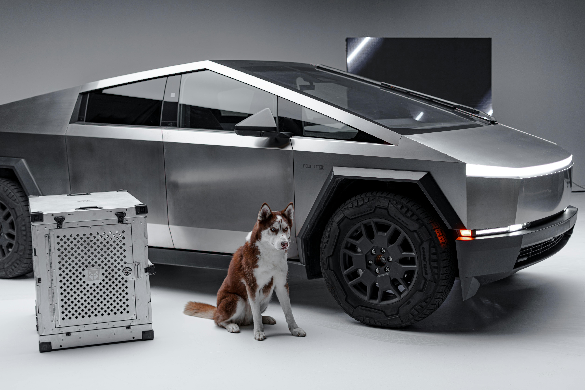

Robots en el hogar
Publicado el 9 de abril de 2025
¿Cuánto falta para tener asistentes robots en casa?
En los últimos años, hemos sido testigos de avances tecnológicos sorprendentes que nos acercan cada vez más al sueño de tener un asistente robot en nuestros hogares. Desde aspiradoras inteligentes hasta robots de cocina, los dispositivos automatizados han comenzado a formar parte de nuestras vidas cotidianas. Pero, ¿cuánto falta para que tengamos un verdadero asistente robótico, capaz de realizar múltiples tareas de manera autónoma? Los desarrollos actuales en inteligencia artificial (IA), robótica y automatización nos han dado una idea de lo que es posible. Empresas como Boston Dynamics, Tesla y Amazon están invirtiendo fuertemente en la creación de robots de servicio que pueden moverse por el hogar, interactuar con los habitantes e incluso realizar tareas como limpiar, cocinar o incluso ofrecer compañía. Sin embargo, aún estamos lejos de ver robots con una capacidad similar a la humana para gestionar el hogar. Aunque los robots actuales son eficientes en tareas específicas, como el Roomba para la limpieza o el asistente Alexa para control de dispositivos, las limitaciones en términos de movilidad, interacción y adaptabilidad siguen siendo evidentes. Expertos en IA y robótica señalan que la clave para el desarrollo de un asistente robot doméstico radica en mejorar la inteligencia contextual, la capacidad de aprendizaje autónomo y la interacción natural con los usuarios. Los avances en visión computacional y procesamiento de lenguaje natural serán esenciales para que los robots comprendan su entorno y se comuniquen de manera efectiva con los humanos. A pesar de los avances, el camino hacia un asistente robótico de pleno funcionamiento sigue siendo largo. La adaptación de estos robots a las complejidades de los hogares, las necesidades cambiantes de los usuarios y la ética relacionada con la autonomía de las máquinas son algunos de los retos más grandes a superar. Aunque no sabemos con certeza cuándo los robots serán una parte integral de nuestros hogares, lo que es claro es que estamos dando pasos firmes hacia un futuro donde los robots podrán desempeñar un papel fundamental en nuestras vidas diarias. ¿Estamos preparados para convivir con estos nuevos compañeros tecnológicos? Solo el tiempo lo dirá.